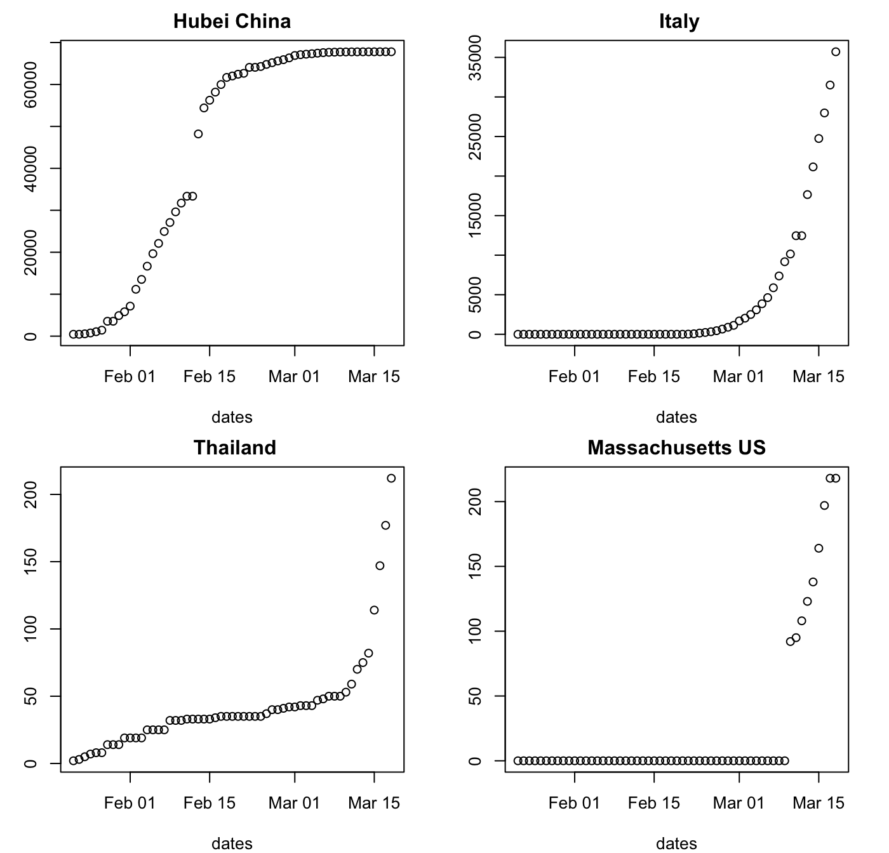
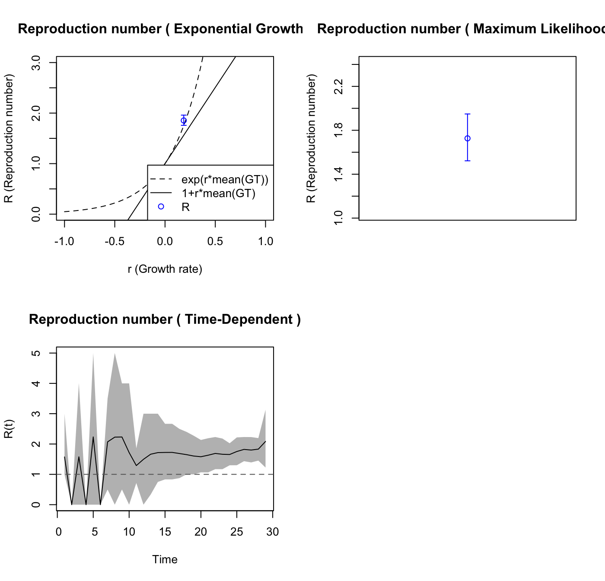
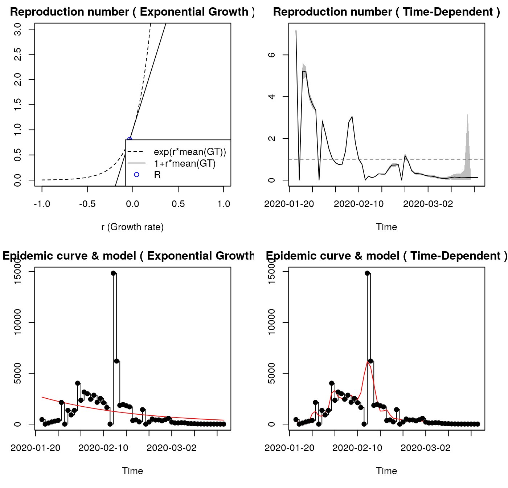
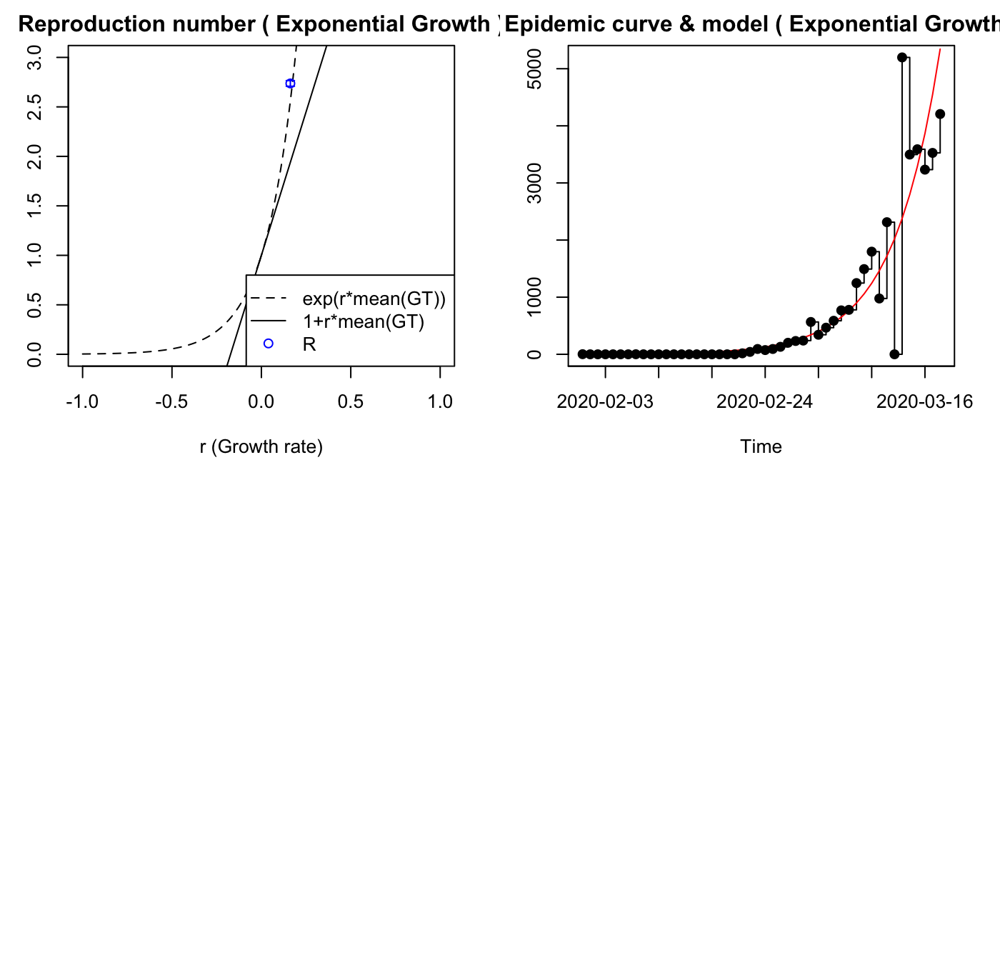

sars2pack: packaging of C. Morefield code on COVID-19 epidemic modeling
Vincent J. Carey, stvjc at channing.harvard.edu
March 27, 2020
Source:vignettes/sars2pack.Rmd
sars2pack.RmdIntroduction
John C Mallery conveyed code of Charles Morefield to harvest COVID-19 time series data. Vince Carey has started an R package/github repo to manage the relevant code. The package is called sars2pack in hopes of avoiding name conflict with many other packages likely developing.
The main functionalities thus far concern importing data from Johns Hopkins Whiting School github repo github.com/CSSEGISandData and using the R0 package to perform certain tasks of epidemic modeling. We also retain a snapshot of existing time series data from 19 March 2020 to facilitate demonstration.
Data and updating
Access
The snapshot looks like:
as_tibble(mar19df)
## # A tibble: 462 x 61
## ProvinceState CountryRegion Lat Long `1/22/20` `1/23/20` `1/24/20`
## <chr> <chr> <dbl> <dbl> <int> <int> <int>
## 1 "" Thailand 15 101 2 3 5
## 2 "" Japan 36 138 2 1 2
## 3 "" Singapore 1.28 104. 0 1 3
## 4 "" Nepal 28.2 84.2 0 0 0
## 5 "" Malaysia 2.5 112. 0 0 0
## 6 "British Col… Canada 49.3 -123. 0 0 0
## 7 "New South W… Australia -33.9 151. 0 0 0
## 8 "Victoria" Australia -37.8 145. 0 0 0
## 9 "Queensland" Australia -28.0 153. 0 0 0
## 10 "" Cambodia 11.6 105. 0 0 0
## # … with 452 more rows, and 54 more variables: `1/25/20` <int>,
## # `1/26/20` <int>, `1/27/20` <int>, `1/28/20` <int>, `1/29/20` <int>,
## # `1/30/20` <int>, `1/31/20` <int>, `2/1/20` <int>, `2/2/20` <int>,
## # `2/3/20` <int>, `2/4/20` <int>, `2/5/20` <int>, `2/6/20` <int>,
## # `2/7/20` <int>, `2/8/20` <int>, `2/9/20` <int>, `2/10/20` <int>,
## # `2/11/20` <int>, `2/12/20` <int>, `2/13/20` <int>, `2/14/20` <int>,
## # `2/15/20` <int>, `2/16/20` <int>, `2/17/20` <int>, `2/18/20` <int>,
## # `2/19/20` <int>, `2/20/20` <int>, `2/21/20` <int>, `2/22/20` <int>,
## # `2/23/20` <int>, `2/24/20` <int>, `2/25/20` <int>, `2/26/20` <int>,
## # `2/27/20` <int>, `2/28/20` <int>, `2/29/20` <int>, `3/1/20` <int>,
## # `3/2/20` <int>, `3/3/20` <int>, `3/4/20` <int>, `3/5/20` <int>,
## # `3/6/20` <int>, `3/7/20` <int>, `3/8/20` <int>, `3/9/20` <int>,
## # `3/10/20` <int>, `3/11/20` <int>, `3/12/20` <int>, `3/13/20` <int>,
## # `3/14/20` <int>, `3/15/20` <int>, `3/16/20` <int>, `3/17/20` <int>,
## # `3/18/20` <int>We can call fetch_JHU()_Data to get a more current instance.
Structure
There are nested structures in the data. Provinces or states nest within countries.
##
## US China Canada Australia France
## 247 33 11 9 8
## United Kingdom
## 5mar19df %>% select(CountryRegion, ProvinceState) %>% filter(CountryRegion=="France")
## CountryRegion ProvinceState
## 1 France France
## 2 France St Martin
## 3 France Saint Barthelemy
## 4 France French Polynesia
## 5 France French Guiana
## 6 France Mayotte
## 7 France Guadeloupe
## 8 France ReunionThe code to assemble information for a country, out of its constituent records, needs to be looked at. The Morefield code for extraction uses data.table idioms – I am not completely sure it is correct. I would like our extracts to be precisely formulated.
Looking at the raw data seems important to get a clear sense of the modeling challenge.
get_series = function(province="", country, dataset=sars2pack::mar19df) { ans = dataset %>% filter(ProvinceState==province & CountryRegion==country) ans[,-c(1:4)] } plot_series = function(province="", country, dataset=sars2pack::mar19df, ...) { ser = get_series(province=province, country=country, dataset=dataset) dates = lubridate::as_date(mdy(names(dataset)[-c(1:4)])) plot(dates, ser, main=paste(province, country), ...) } par(mfrow=c(2,2),mar=c(4,3,2,2)) plot_series(province="Hubei", country="China") plot_series(country="Italy") plot_series(country="Thailand") plot_series("Massachusetts", country="US")

Modeling illustrated for a simulation
Following code conveyed by John Mallery, we have the following approach for estimating R0 using a single realization of an epidemic simulation.
Note that there can be failures of estimate.R for certain inputs. We are working on that.
library(R0) # Generating an epidemic with given parameters mGT <- generation.time("gamma", c(3,1.5)) set.seed(5432) # always initialize when simulating! mEpid <- sim.epid(epid.nb=1, GT=mGT, epid.length=30, family="poisson", R0=1.67, peak.value=500) mEpid <- mEpid[,1] # Running estimations est <- estimate.R(epid=mEpid, GT=mGT, methods=c("EG","ML","TD"), begin=1, end=30)
## Waiting for profiling to be done...## Warning in est.R0.TD(epid = c(1, 0, 1, 0, 1, 0, 2, 1, 2, 1, 7, 2, 3, 4, :
## Simulations may take several minutes.## Warning in est.R0.TD(epid = c(1, 0, 1, 0, 1, 0, 2, 1, 2, 1, 7, 2, 3, 4, : Using
## initial incidence as initial number of cases.We modified the plotting function in R0 which was calling dev.new too often. Use plot2.

The plotfit2 function is also useful. These fits look identical but they are not.

Modeling for a geographic entity
Now we extract information from the time-series table and obtain estimates of R0 under exponential growth.
Hubei Province
We are able to use exponential growth and time-dependent models with this data, using generation time model from a recent Annals of Internal Medicine paper.
The incidence data probably need smoothing, and the time-dependent model has unreasonable fluctuations.
dates = lubridate::as_date(mdy(names(mar19df)[-c(1:4)])) hubdat = as.numeric(get_series(province="Hubei", country="China", dataset=sars2pack::mar19df)) names(hubdat) = dates mGT <- generation.time("gamma", c(5.8, 0.95)) # from DOI 10.7326/M20-0504 hubdat.filt = trim_leading_values(c(hubdat[1], diff(hubdat))) est.EG <- estimate.R(epid=hubdat.filt, GT=mGT, methods=c("EG", "TD"), begin=1L, end=as.integer(length(hubdat.filt)))
## Waiting for profiling to be done...## Warning in est.R0.TD(epid = c(`2020-01-22` = 444, `2020-01-23` = 0, `2020-01-24`
## = 105, : Simulations may take several minutes.## Warning in est.R0.TD(epid = c(`2020-01-22` = 444, `2020-01-23` = 0, `2020-01-24`
## = 105, : Using initial incidence as initial number of cases.est.EG## Reproduction number estimate using Exponential Growth method.
## R : 0.8061514[ 0.8035971 , 0.8087093 ]
##
## Reproduction number estimate using Time-Dependent method.
## 7.162571 0 5.216657 5.191665 4.048158 3.631084 3.349247 0 2.835442 2.187792 ...
Italy
For Italy, only the EG model seems to work, with the Annals of Internal Medicine generation time model. It fits the data reasonably well, but the data seems to include a reporting gap.
itdat = as.numeric(get_series(province="", country="Italy", dataset=sars2pack::mar19df)) names(itdat) = dates itdat.filt = trim_leading_values(c(itdat[1], diff(itdat))) est.EG <- estimate.R(epid=itdat.filt, GT=mGT, methods=c("EG"), begin=1L, end=as.integer(length(itdat.filt)))
## Waiting for profiling to be done...est.EG## Reproduction number estimate using Exponential Growth method.
## R : 2.736957[ 2.708604 , 2.765787 ]